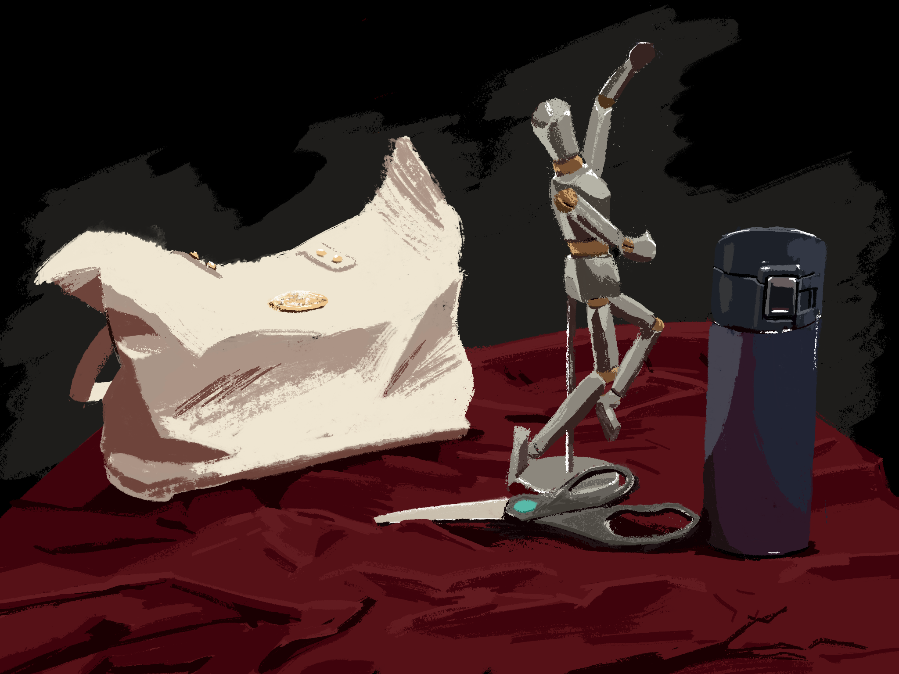
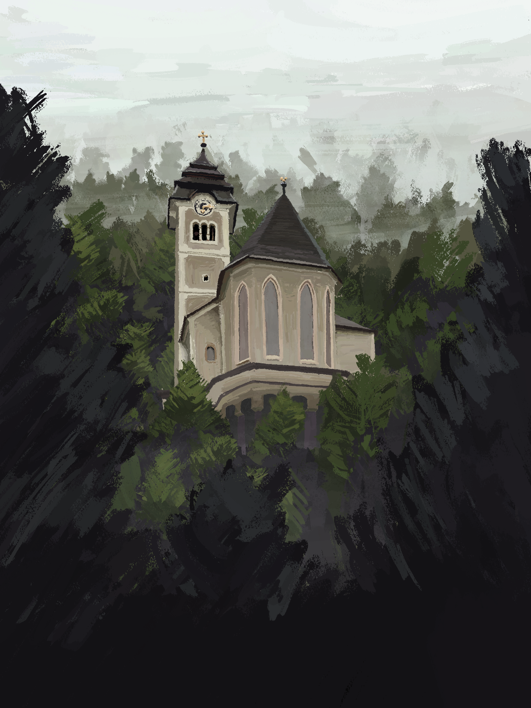
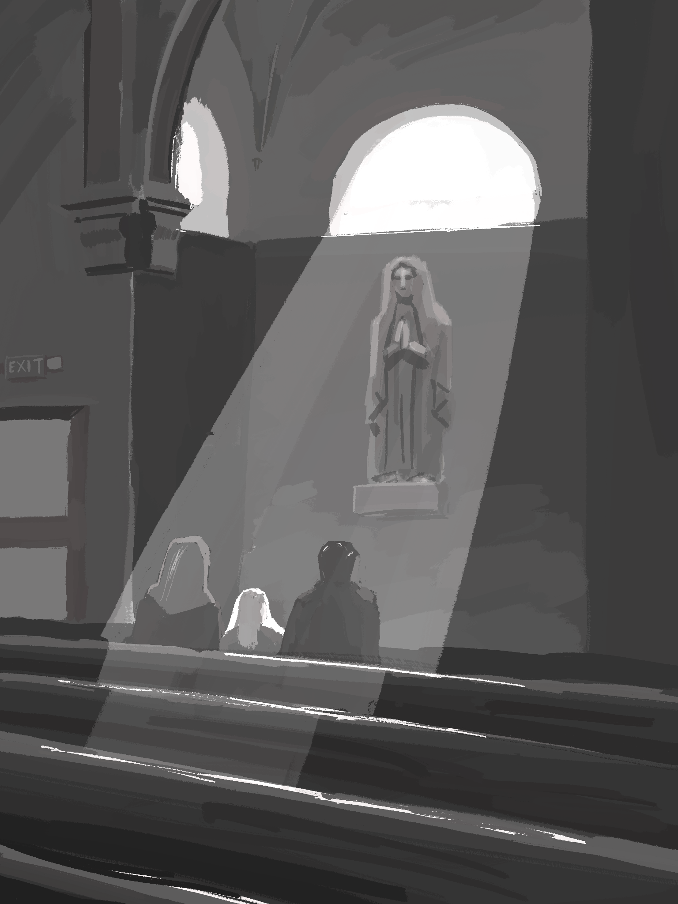
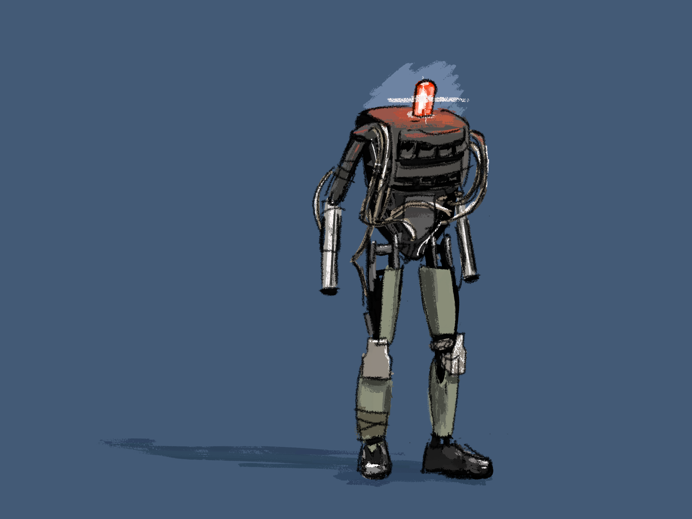

CGT321 portfolio

Class still-life project.
 Pfarrkirche Maria am Berg in Hallstatt, Austria ➔
Loosely based off of a photo I took.
 St. Leo Oratory ➔
Recalled moment while attending mass. A window above Mary cast light through incense and onto a little girl wearing a veil.
 Boston Dynamics' PETMAN ➔